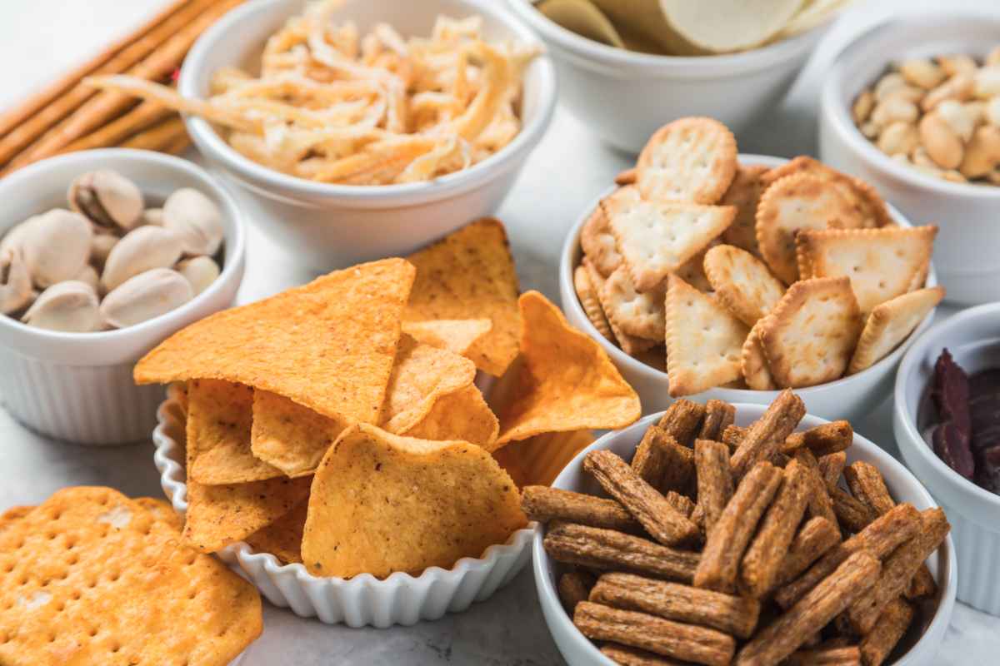

Starter
Nice and simple menu for starter.

Vegetable salad
Vegies vegies vegies healthy salad easy to make .
Braai meat
Braai meat you can eat it with pap, bread or just enjoy it with drinks.
Eggs with bread
Fried eggs with bread ana light source.
Chicken curry
Chicken curry , its chicken,curry spice ,curriander, salt and black pepper.

Different delicious food
Enyoy the Mouth watering food

Green Salad
Green salad we all know how to make one nice and delicous simple salad

Dessert
my delicous Dessert cake.

Snacks
Enjoy my snack and peanuts.
My Reviews. Take your time and enjoy while you can.
To Shisa nyama “braai” or barbeque (Bar-B-Q) meat is a South African tradition. We can usually do it every day. It’s a chance to get your friends and family together, sip some wine or down a couple of cold ones. Flavorful Mouth-watering .